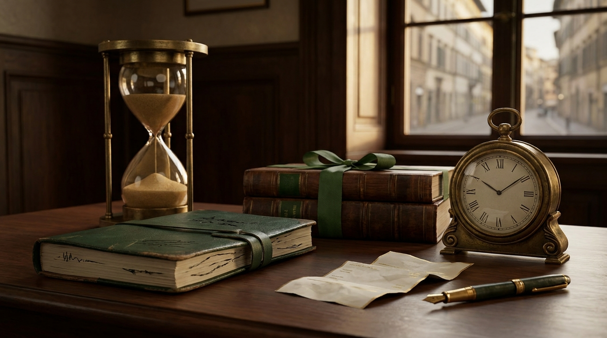

Ritardi sistematici e perdita di clienti: quando scatta il licenziamento per giusta causa
La giurisprudenza di legittimità conferma un principio consolidato: i ritardi sistematici che ledono l'organizzazione aziendale e causano la perdita di clienti possono integrare la giusta causa di licenziamento. Conta la diligenza dovuta dal lavoratore (art. 2104 c.c.) e la gravità della condotta. Vediamo confini normativi, criteri di proporzionalità e regime sanzionatorio applicabile.

Il caso e il principio
Un dipendente accumula ritardi reiterati. L'azienda subisce disservizi e perde clienti. Il datore lo licenzia per giusta causa. La sentenza viene confermata in sede di legittimità.
La decisione si colloca in un orientamento consolidato. Non basta il singolo episodio: rilevano la sistematicità della condotta, l'incidenza sull'organizzazione produttiva e il danno concreto, qui la perdita di rapporti commerciali.
Una precisazione di metodo: in assenza di estremi identificativi della pronuncia (sezione, numero, anno), trattiamo qui i principi affermati dalla giurisprudenza di legittimità in materia, senza attribuirli a una specifica decisione non verificabile.
Inquadramento normativo
Il punto di partenza è l'art. 2104 c.c., che impone al lavoratore la diligenza richiesta dalla natura della prestazione e l'osservanza delle disposizioni impartite dal datore. Il rispetto degli orari e dei tempi di consegna rientra in questo obbligo.
Quando l'inadempimento è grave, opera l'art. 2119 c.c.: la giusta causa è la condotta che non consente la prosecuzione, neppure provvisoria, del rapporto. Consente il licenziamento senza preavviso.
Va però distinta dal giustificato motivo soggettivo (art. 3 L. 604/1966): qui l'inadempimento è notevole ma non talmente grave da escludere la prosecuzione temporanea del rapporto. Conseguenza pratica: il licenziamento per giustificato motivo soggettivo richiede il preavviso, quello per giusta causa no.
La linea di confine non è teorica. Determina l'esistenza o meno del preavviso e influisce sul giudizio di legittimità del recesso.
Proporzionalità e ruolo del CCNL
Il criterio decisivo è la proporzionalità tra fatto e sanzione. Il giudice non si limita a verificare l'esistenza del ritardo: valuta l'elemento soggettivo (colpa o dolo), la reiterazione, le eventuali recidive già sanzionate, il danno e il contesto.
Un ruolo rilevante lo svolgono le previsioni del CCNL applicabile. I codici disciplinari di categoria tipizzano le mancanze e graduano le sanzioni, dal richiamo verbale al licenziamento. Se il contratto colloca una determinata condotta tra quelle punibili con sanzione conservativa, il datore difficilmente potrà legittimamente arrivare al licenziamento per quel solo fatto.
La sussunzione della condotta concreta nelle previsioni contrattuali è quindi un passaggio tecnico spesso decisivo nel contenzioso.
Regime sanzionatorio: i due binari
In caso di licenziamento illegittimo, le tutele dipendono dalla data di assunzione.
- Per i lavoratori assunti fino al 6 marzo 2015 si applica l'art. 18 L. 300/1970, come modificato dalla L. 92/2012 (riforma Fornero): il regime è articolato e prevede, secondo i casi, tutela reintegratoria piena, reintegratoria attenuata o indennitaria.
- Per i lavoratori assunti dal 7 marzo 2015 opera il D.lgs. 23/2015 (contratto a tutele crescenti): qui la reintegrazione è circoscritta a ipotesi più ristrette e la regola generale è la tutela indennitaria, parametrata all'anzianità.
Non è un dettaglio: la data di assunzione cambia il tipo di tutela e l'esito economico della controversia.
Implicazioni pratiche
Per il datore, il licenziamento per giusta causa regge solo se sorretto da prove rigorose. L'onere probatorio sulla gravità e sull'imputabilità della condotta grava su chi recede.
Per il lavoratore, ritardi reiterati e già contestati espongono a un rischio concreto, soprattutto se documentati e collegati a un danno aziendale. Ma restano spazi di difesa: vizi del procedimento disciplinare, sproporzione della sanzione, mancata corrispondenza con il codice disciplinare.
Cosa fare in concreto
- Documentate ogni episodio. Datore e lavoratore conservino comunicazioni, fogli presenze, riscontri sui ritardi e sulle relative conseguenze.
- Verificate il rispetto del procedimento disciplinare (art. 7 L. 300/1970): contestazione tempestiva e specifica, termine a difesa, valutazione delle giustificazioni.
- Confrontate la condotta con il CCNL applicabile. Controllate se la mancanza è tipizzata e quale sanzione vi è abbinata.
- Individuate la data di assunzione. Da essa dipende il regime sanzionatorio applicabile in caso di illegittimità.
- Considerate i profili tecnici delle due fasi. La contestazione e l'eventuale impugnazione presentano aspetti procedurali e probatori che incidono sull'esito.
Disclaimer
Contributo informativo a cura di Tamburro & Partners - Avv. Giuseppe Tamburro. Non costituisce parere legale.
Ogni storia di lavoro ha i suoi tempi.
Se gestisci HR e vuoi un confronto su contenzioso, ispezioni o licenziamenti, scrivi allo studio. Ti rispondiamo entro un giorno lavorativo.